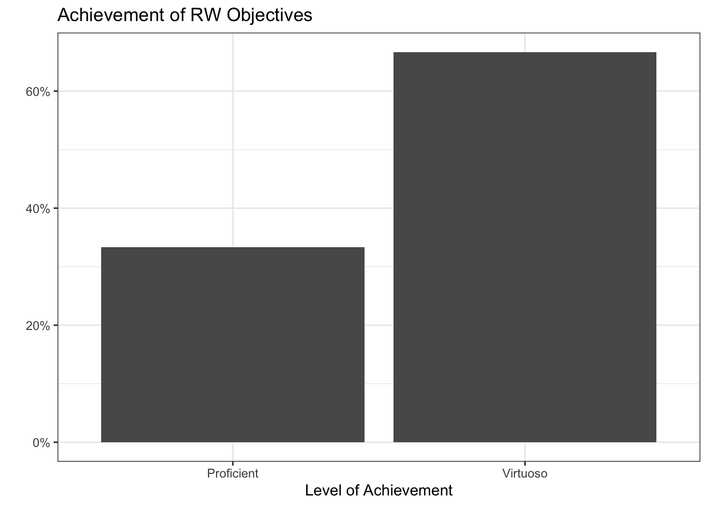
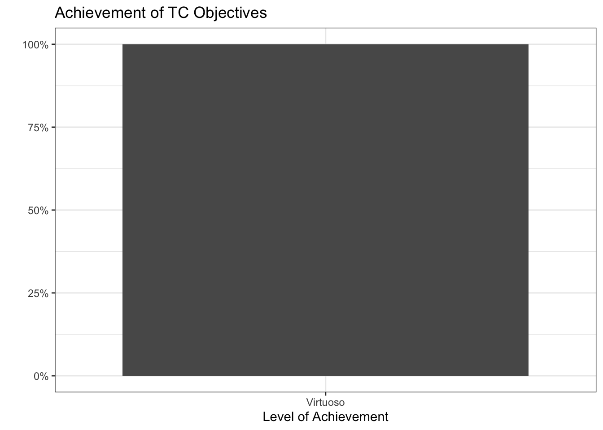
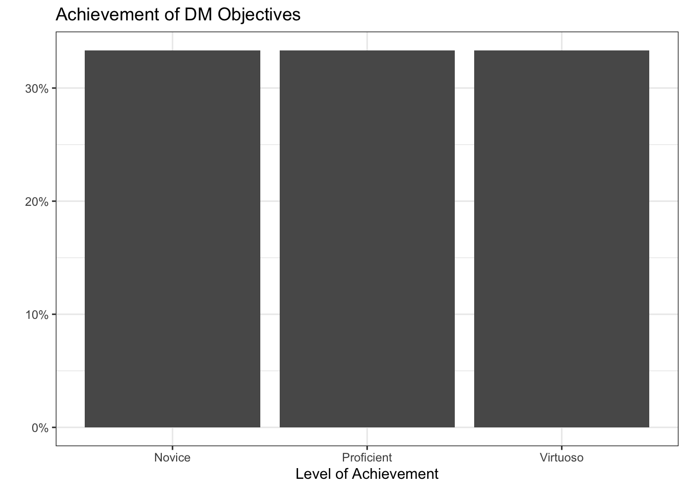
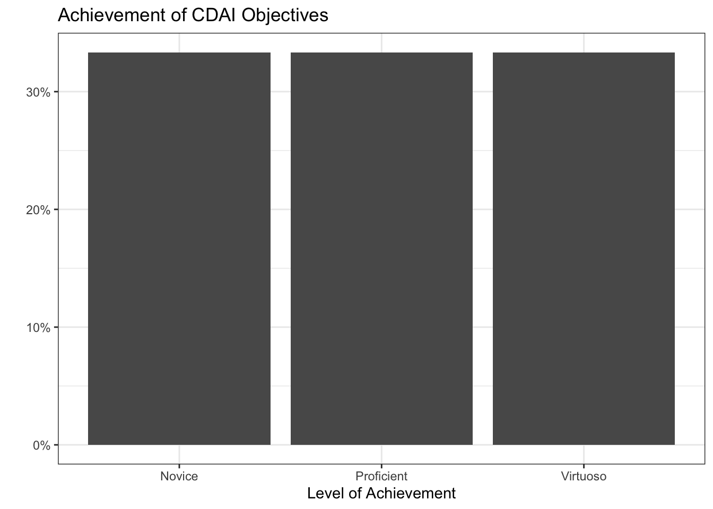
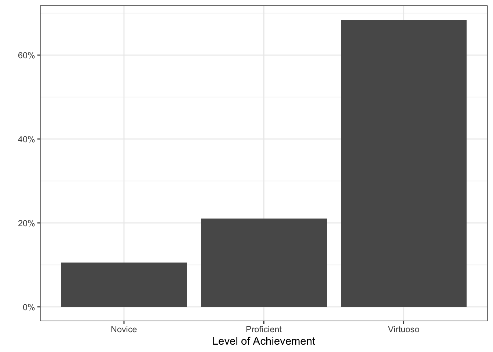

mappal <- colorNumeric('RdPu', domain = mergedmap$pctgroup)
labelpal <- colorFactor('RdPu', domain = mergedmap$grouplabel)
leaflet(mergedmap) %>%
addTiles() %>%
addPolygons(
fillColor = ~ mappal(pctgroup),
weight = 1, fillOpacity = 0.7,
color = "lightgray",
label = ~ paste(name_long, ":", percentlabel)) %>%
addLegend(
pal = labelpal, values = ~ grouplabel,
title = "People who say their children have been vaccinated"
)Independent Learning (IL):
These objectives show your ability to seek out new information and adapt to new tools to solve data analysis problems.
[IL-1] Adding new skills:
- I can find and adopt new packages to accomplish tasks.
- I can adapt to different syntax styles (tidy, base, formula style, data.table).
Level: 2
Justification:
Lab 2: leaflet
In lab 2, I was introduced to the leaflet package for the first time. I was able to create an interactive map filled by colors using functions from the package colorNumeric and colorFactor. I demonstrated a solid understanding of creating maps, labelling them, and creating interactive features.
checkboxGroupInput("selected_regions", "Select Regions:",
choices = unique(percents$region),
selected = unique(percents$region))
checkboxInput("show_median", "Show Region Medians", value = TRUE) output$avgcard <- renderText({
filtered_data <- percents %>%
filter(region %in% input$selected_regions)
mean <- mean(filtered_data$pctagree)
paste(round(mean * 100, 2), "%")
})In lab 4, I was experience using Shiny for the first time. This was a completely new way of interacting with R for me, and I enjoyed being able to create apps. I feel I succeeded in learning this skill in a timely manner and implementing Shiny in a meaningful way.
[IL-2] Online resources:
- I can use online resources (e.g., Google, ChatGPT, StackOverflow, YouTube) to solve problems, debug, or find new tools.
- I can use tutorials, etc. to enhance my understanding of new concepts.
- I can find source code for similar projects to use as starting points for my own.
Level: 3
Justification:
leaflet(mergedmap) %>%
.... %>%
addLegend(
pal = labelpal, values = ~ grouplabel,
title = "People who say their children have been vaccinated"
)Lab 2 presented an issue with properly labeling the leaflet map. Since this was a new package for me, troubleshooting was difficult. So, I turned to ChatGPT to help fix the addLegend function, specifically the pal and values arguments. ChatGPT was successful and provided me with the lines of code pictured above.
Lab 3 was a fun chance to play around with stylizing options, specifically themes and icons. I used online resources to help me with these steps and to determine what I wanted my dashboard to look like. Below are two resources I used:
Icons used in quick cards Theming
This website: (code seen on GitHub)
website:
title: "Lily Cook"
navbar:
left:
- href: index.qmd
text: Home
- href: about.qmd
text: About
- href: BlogPosts.qmd
text: Blog
right:
- icon: github
href: https://github.com/lilypcook/lab-3
aria-label: GitHub
- icon: linkedin
href: https://www.linkedin.com/in/lilypaintoncook/
aria-label: LinkedIn
favicon: "media/flower-icon.jpg"When working on this website, I found that there was no icon on the browser tab when, and I did not like that, so I turned to the internet to help, and it was successful. This post on Stack Overflow pointed me in the right direction.
IL Summary

Reproducible Workflow (RW):
These objectives show your ability to produce artifacts and deliverables that are organized, documented, version tracked, and responsibly designed.
[RW-1] File, code, and data management:
- I can use Git and GitHub to track my progress (creating repos, cloning, forking, pull requesting).
- I always use R Projects and the {here} package to organize my scripts, notebooks, data, and applications.
- I always use pull requests when collaborating with others.
Level: 3
Justification:
This is surprisingly the first class I was required to use Git and GitHub for. I have done a good job learning and implementing Github, especially creating repositories. My repositories are here. I am able to commit and push in both RStudio and the terminal. I think the biggest justification of my GitHub skills is that this website is created and hosted with GitHub. I have been able to implement GitHub for other projects, including my thesis. Coming from 0 GitHub experience to having a somewhat complex website hosted with is a testament to me meeting this learning goal.
[RW-2] Notebooks:
- I can use Quarto to produce a reproducible notebook and polished rendered documents
- I can use appropriate chunk options (echo, error, cache, etc.) to render my Quarto document quickly and cleanly.
Level: 3
Justification:
Lab 1: Stylizing document
Make this text bold.
Make this text italicized.
Make these into a bullet point list:
Apples
Bananas
Potatoes
In Lab 1, I demonstrated the ability to stylize Quarto documents, including text as seen above. Additionally, in this Lab I demonstrated my ability to utilize code chunk options, including #| eval: false, #| echo: false and #| layout-nrow: 1
Lab 3: (code seen on GitHub): Chunk options for creating dashboard
---
title: "Lab 3 Dashboard - Lily Cook"
format:
dashboard:
theme: minty
orientation: columns
nav-buttons:
- icon: github
href: https://github.com/lilypcook/lab-3
aria-label: GitHub
- icon: linkedin
href: https://www.linkedin.com/in/lilypaintoncook/
aria-label: LinkedIn
logo: worldlogo.png
---In Lab 3, I was able to use YAML options, seen above, to turn my document into a Quarto dashboard. In this document, I was able to use various HTML commands to set formatting including {.tabset} and {.width = 80%} Additionally, I set these code chunks so they would not render in this document. Overall, I have shown the ability to appropriately format multiple documents using Quarto and HTML languages.
[RW-3] Code style
- My code is clear, readable, well-organized, and well-commented.
Level: 2
Justification
data.full <- data.full %>%
mutate(region = case_when(
Regions_Report %in% c(1, 2, 4, 5) ~ "Sub-Saharan Africa",
Regions_Report %in% c(6, 7, 8) ~ "Americas",
Regions_Report %in% c(9, 10, 11, 12, 18) ~ "Asia",
Regions_Report %in% c(3, 13) ~ "Middle East and North Africa",
Regions_Report %in% c(15, 16, 17, 0) ~ "Europe",
Regions_Report %in% c(14) ~ "Former Soviet Union"
))
vaccinepct <- data.full %>%
select(country, Q28) %>%
drop_na() %>%
group_by(country) %>%
summarise(tot = n(),
totyes = sum(Q28 == 1),
pctyes = totyes/tot) %>%
mutate(pctgroup = case_when(
pctyes < 0.7 ~ 1,
pctyes >= 0.7 & pctyes < 0.8 ~ 2,
pctyes >= 0.8 & pctyes < 0.9 ~ 3,
pctyes >= 0.9 & pctyes < 0.95 ~ 4,
pctyes >= 0.95 ~ 5
))This snippet of code from Lab 3 demonstrated my coding style. I use clean style, with the package dplyr to clean the data. I name the variables I create logical and informative names, to ensure that they will be easy to find when needed. I also make sure to name all chunks in labs. The use of %in% shows an improvement in style from the beginning of the quarter. Where I can improve to reach virtuoso status is adding more comments to the code for added reproducibility.
RW Summary

Technical Communication (TC):
These objectives show your ability to communicate the processes you have implemented in your code, as well as the data conclusions and results.
[TC-1] Project summaries:
- I can create clear and succinct summaries of a project.
- I accurately interpret statistical or modeling results.
- I consider the appropriate scope and impact of my project results.
Level: 3
Justification:
#| content: valuebox
#| title: Average Country-Wide Belief in Safety of Vaccines
#| color: info
#| icon: globe
list(value = paste(round(avgpercent * 100,2), "%"))In Labs 3 and 4, I created succinct visualizations and value boxes that provided quick and clear summaries of the Wellcome analysis. Above is an example chunk of a value box I created in lab 4, but looking at the dashboards themselves provide better evidence. The dashboards provide a good overview of the analysis done in digestible chunks for non-statistically minded people. I sent this dashboard to my mom (who is a immunization nurse) and she was able to understand all visualizations.
We have mostly only done the first point of this learning objective in class, so I don’t have evidence for the second bullet points.
[TC-2] Documentation:
- I can create a user-friendly dashboard.
- I provide ample documentation for my custom functions.
Level: 3
Justification:
Lab 3: (code seen on GitHub): Labeling of dashboard documents and overall layout
---
title: "Lab 3 Dashboard - Lily Cook"
format:
dashboard:
theme: minty
orientation: columns
nav-buttons:
- icon: github
href: https://github.com/lilypcook/lab-3
aria-label: GitHub
- icon: linkedin
href: https://www.linkedin.com/in/lilypaintoncook/
aria-label: LinkedIn
logo: worldlogo.png
---In Lab 3, I created my first dashboard from scratch. The above chunk shows the YAML for the layout used. This layout ensured a straightforward user experience. Additionally, I utilized tabset and page options, to avoid too much information on one page. I also appropriate organization and labels for these plots to ensure a good user experience on the dashboard.
Lab 4: (code seen on GitHub): Clear user inputs
checkboxGroupInput("selected_regions", "Select Regions:",
choices = unique(percents$region),
selected = unique(percents$region))
checkboxInput("show_median", "Show Region Medians", value = TRUE)Lab 4 had a similar dashboard to Lab 3. I had similar successes in Lab 4 as with Lab 3. To extend this in Lab 4, I used user-friendly user inputs, so it was clear what was needed from the user to interact with the dashboard. Again, I sent this dashboard to my parents, and it was clear for them to interact with, they had no questions.
TC Summary

Data Manipulation (DM):
These objectives relate to the collection, cleaning, processing, and preparing of datasets for analysis.
[DM-1] Data Preparation
- I can read in datasets to R, including untidy ones.
- I can clean datasets to deal with missing data, typos, poor formatting, etc.
Level: 2
Justification:
library(tidyverse)
library(readxl)
data.summary <- read_xlsx("wgm2018-dataset-crosstabs-all-countries.xlsx", sheet = 1)
data.full <- read_xlsx("wgm2018-dataset-crosstabs-all-countries.xlsx", sheet = 2)
data.dictionary <- read_xlsx("wgm2018-dataset-crosstabs-all-countries.xlsx", sheet = 3)
country.names <- '1=United States, 2=Egypt, 3=Morocco, 4=Lebanon, 5=Saudi Arabia, 6=Jordan, 8=Turkey, 9=Pakistan, 10=Indonesia, 11=Bangladesh, 12=United Kingdom, 13=France, 14=Germany, 15=Netherlands, 16=Belgium, 17=Spain, 18=Italy, 19=Poland, 20=Hungary, 21=Czech Republic, 22=Romania, 23=Sweden, 24=Greece, 25=Denmark, 26=Iran, 28=Singapore, 29=Japan, 30=China, 31=India, 32=Venezuela, 33=Brazil, 34=Mexico, 35=Nigeria, 36=Kenya, 37=Tanzania, 38=Israel, 39=Palestinian Territories, 40=Ghana, 41=Uganda, 42=Benin, 43=Madagascar, 44=Malawi, 45=South Africa, 46=Canada, 47=Australia, 48=Philippines, 49=Sri Lanka, 50=Vietnam, 51=Thailand, 52=Cambodia, 53=Laos, 54=Myanmar, 55=New Zealand, 57=Botswana, 60=Ethiopia, 61=Mali, 62=Mauritania, 63=Mozambique, 64=Niger, 65=Rwanda, 66=Senegal, 67=Zambia, 68=South Korea, 69=Taiwan, 70=Afghanistan, 71=Belarus, 72=Georgia, 73=Kazakhstan, 74=Kyrgyzstan, 75=Moldova, 76=Russia, 77=Ukraine, 78=Burkina Faso, 79=Cameroon, 80=Sierra Leone, 81=Zimbabwe, 82=Costa Rica, 83=Albania, 84=Algeria, 87=Argentina, 88=Armenia, 89=Austria, 90=Azerbaijan, 96=Bolivia, 97=Bosnia and Herzegovina, 99=Bulgaria, 100=Burundi, 103=Chad, 104=Chile, 105=Colombia, 106=Comoros, 108=Republic of Congo, 109=Croatia, 111=Cyprus, 114=Dominican Republic, 115=Ecuador, 116=El Salvador, 119=Estonia, 121=Finland, 122=Gabon, 124=Guatemala, 125=Guinea, 128=Haiti, 129=Honduras, 130=Iceland, 131=Iraq, 132=Ireland, 134=Ivory Coast, 137=Kuwait, 138=Latvia, 140=Liberia, 141=Libya, 143=Lithuania, 144=Luxembourg, 145=Macedonia, 146=Malaysia, 148=Malta, 150=Mauritius, 153=Mongolia, 154=Montenegro, 155=Namibia, 157=Nepal, 158=Nicaragua, 160=Norway, 163=Panama, 164=Paraguay, 165=Peru, 166=Portugal, 173=Serbia, 175=Slovakia, 176=Slovenia, 183=Eswatini, 184=Switzerland, 185=Tajikistan, 186=The Gambia, 187=Togo, 190=Tunisia, 191=Turkmenistan, 193=United Arab Emirates, 194=Uruguay, 195=Uzbekistan, 197=Yemen, 198=Kosovo, 202=Northern Cyprus'
country.names <- strsplit(country.names, split = ",")
country.names <- country.names[[1]]
country.names <- as_tibble(country.names)
country.names <- separate_wider_delim(country.names,
delim = "=",
cols = c("value"),
names = c("WP5", "country"))
country.names <- country.names %>% mutate(WP5 = as.numeric(WP5))
data.full <- merge(data.full, country.names, by = "WP5")
region.names <- "0=Not assigned, 1=Eastern Africa,2=Central Africa,3=North Africa,4=Southern Africa,5=Western Africa,6=Central America and Mexico,7=Northern America,8=South America,9=Central Asia,10=East Asia,11=Southeast Asia,12=South Asia,13=Middle East,14=Eastern Europe,15=Northern Europe,16=Southern Europe,17=Western Europe,18=Aus/NZ"
region.names <- strsplit(region.names, split = ",")
region.names <- region.names[[1]]
region.names <- as_tibble(region.names)
region.names <- separate_wider_delim(region.names,
delim = "=",
cols = c("value"),
names = c("Regions_Report", "Region_Name"))
region.names <- region.names %>% mutate(Regions_Report = as.numeric(Regions_Report))
data.full <- merge(data.full, region.names, by = "Regions_Report")
data.full <- data.full %>%
mutate(region = case_when(
Regions_Report %in% c(1, 2, 4, 5) ~ "Sub-Saharan Africa",
Regions_Report %in% c(6, 7, 8) ~ "Americas",
Regions_Report %in% c(9, 10, 11, 12, 18) ~ "Asia",
Regions_Report %in% c(3, 13) ~ "Middle East and North Africa",
Regions_Report %in% c(15, 16, 17, 0) ~ "Europe",
Regions_Report %in% c(14) ~ "Former Soviet Union"
))Lab 2 had a very messy data to read in. It was an Excel file with three different sheets, with less than ideal data. This demonstrated my ability to use multiple types of data, not just csv files. I was able to utilize dplyr and other packages to successfully clean data. Working with string data is complicated, and I was able use multiple tools like strsplit() and separate_wider_delim() to work with them. However, I do have room for improvement. The long strings pulled out were entries in the data dictionary and I used the merge() function, rather than the cleaner join() options.
data.full <- read_csv("datafull.csv")In Lab 4, the same dataset was used. I utilized data pre-processing and saved the data with write.csv() so I did not need to process this data everytime this app was rendered, which was necessary for publishing on Shiny. Above is how I was able to read in the csv using readr package.
[DM-2] Data Wrangling
- I can cleverly use pivoting, separating, grouping, and joining to wrangle data.
- I can use mapping (
purrr) to perform repeated tasks.
Level: 3
Justification:
mapdata <- ne_countries(scale = "medium", returnclass = "sf")
vaccinepct <- vaccinepct %>%
mutate(country = case_when(
country == "Eswatini" ~ "Kingdom of eSwatini",
country == "Ivory Coast" ~ "Côte d'Ivoire",
country == "Laos" ~ "Lao PDR",
country == "Macedonia" ~ "North Macedonia",
country == "Palestinian Territories" ~ "Palestine",
country == "Republic of Congo" ~ "Republic of the Congo",
country == "Russia" ~ "Russian Federation",
country == "South Korea" ~ "Republic of Korea",
TRUE ~ country),
name_long = country)
#vaccinepct[which(!(vaccinepct$name_long %in% mapdata$name_long)), 1]
mergedmap <- left_join(mapdata, vaccinepct, by = "name_long")
mergedmap <- mergedmap %>%
mutate(pctgroup = case_when(
pctyes < 0.7 ~ 1,
pctyes >= 0.7 & pctyes < 0.8 ~ 2,
pctyes >= 0.8 & pctyes < 0.9 ~ 3,
pctyes >= 0.9 & pctyes < 0.95 ~ 4,
pctyes >= 0.95 ~ 5,
is.na(pctyes) ~ 0),
percentlabel = round(pctyes * 100, 2),
percentlabel = ifelse(is.na(percentlabel), "Not surveyed", paste(percentlabel,"%")),
grouplabel = case_when(
pctgroup == 0 ~ "Not surveyed",
pctgroup == 1 ~ "Less than 70%",
pctgroup == 2 ~ "70% to 79%",
pctgroup == 3 ~ "80% to 89%",
pctgroup == 4 ~ "90% to 94%",
pctgroup == 5 ~ "95% and above"
),
grouplabel = fct_reorder(grouplabel, pctgroup))In labs 2 and 3, to create a leaflet map, I had to use map data that came from a JSON file from the rnaturalearth package. This demonstates my ability to wrangle data, as I was able to indentify differences in two files using which() and merge the files (this time using more appropriate left_join). This code chunk also demonstrates my ability to create new variables for analysis using case_when and ifelse(). Again, I demonstrate my familiarity with dplyr functions to group, separate, and reorder data. I justify my virtuoso status here with my visible improvements from the code chunk in the previous learning objective.
[DM-3] Data Formats
- I can use API urls to access JSON data and convert it into a data frame
- I can scrape data from the web and convert it into a data frame
## Fill in the line below with your self-assigned level for this objective.
my_level <- 1
portfolio_levels <- portfolio_levels %>%
bind_rows(tibble(Objective = "DM-3",
Level = my_level))Level: 1
Justification
Have not completed relevant tasks yet
DM Summary

Professional Visualization (PV):
[PV-1] Clear & Accessible Visualizations
- I can make my plots more clear by removing the legend and adding annotations.
- I can edit the titles, subtitles, captions, axis labels, etc. to create a clearly labelled plot.
- I can choose colors (“scales”) and themes to make a visually pleasing and accessible plot.
Level: 3
Justification:
Lab 2: improvements of visualizations
percents <- data.full %>% select(country, region, Q25) %>%
drop_na() %>%
mutate(agree = ifelse(Q25 < 3, 1, 0)) %>%
group_by(country, region) %>%
summarise(totagree = sum(agree),
tot = n(),
pctagree = totagree/tot)
medians <- percents %>%
group_by(region)%>%
summarise(medregion = median(pctagree))
percents %>%
ggplot() +
geom_vline(data = medians, aes(xintercept = medregion), color = "black")+
geom_dotplot(aes(x = pctagree, fill = region),
method = "histodot",
dotsize = 0.6,
binwidth = 0.01) +
facet_wrap(~region, ncol = 1)+
geom_text(aes(x = 0.3, y = 0.5, label = region, color = region),
hjust = "inward",
size =5,
family = "Times",
fontface = "bold")+
scale_fill_brewer(palette = "Set2") +
scale_color_brewer(palette = "Set2")+
theme_minimal() +
theme(legend.position = "none",
panel.grid.major.y = element_blank(),
panel.grid.minor.y = element_blank(),
axis.text.y = element_blank(),
strip.text = element_blank(),
text= element_text(family = "Times"),
plot.title = element_text(face = "bold")) +
scale_x_continuous(labels = scales::percent_format(accuracy = 1))+
labs(title = "Percent of people who believe vaccines are safe by country and global region", subtitle = "Black lines represent region median",
x = "", y = "")Lab 2 focused on improving visualizations. Above is the code for the dotplot. I removed the legend and messy labels, insted replacing these with test over the relevant facets. This uses a color-blind friendly brewer palette (Set2), and text and data points are color coded. I have a clear title and an informative sub-title. I have minimal gridlines and a single x-axis to avoid unnecessary distraction. Overall, I follow the grammer of graphic guidelines outline in the Ted Talk we watched at the beginning of the quarter.
[PV-2] Dynamic Visualizations
- I can use a package like {gganimate} to create self-contained gifs.
- I can use a package like {plotly}, {ggplotly}, {leaflet}, {ggirafe}, etc. to make interactive html widgets.
Level: 2
Justification:
Lab 2: leaflet
mappal <- colorNumeric('RdPu', domain = mergedmap$pctgroup)
labelpal <- colorFactor('RdPu', domain = mergedmap$grouplabel)
leaflet(mergedmap) %>%
addTiles() %>%
addPolygons(
fillColor = ~ mappal(pctgroup),
weight = 1, fillOpacity = 0.7,
color = "lightgray",
label = ~ paste(name_long, ":", percentlabel)) %>%
addLegend(
pal = labelpal, values = ~ grouplabel,
title = "People who say their children have been vaccinated"
)In Lab 2, I created an interactive leaflet, including labels that appear when hovering over a country. This map was clear and well labeled, and a good representation of my dynamic plot skills. I gave myself a proficient as I have not utilized as many packages to develop interactive visualizations as I would like.
[PV-3] Interactive Visualizations
- I can use Shiny or webR to create visualizations that react to a user’s input.
Level: 3
Justification:
Lab 4: (code seen on GitHub) Shiny Interactivity
sliderInput("percent_filter",
label = "Minimum Vaccination Rate (%)",
min = 0,
max = 100,
value = 50,
step = 1)checkboxGroupInput("selected_regions2", "Select Regions:",
choices = unique(percents$region),
selected = unique(percents$region))In Lab 4, I utilized Shiny to create an interactive visualization, value box and table. Above is the code used to create user inputs for the table, including a slider and check boxes. The interactive table responded to two types of user input, demonstrating my ability in interactive visualizations. The interactive dot plot in this dashboard also responded to multiple inputs. Though this table could use improvement in organization, the interactivity of it is well done.
PV Summary
Code Design, Algorithms, Iteration (CDAI):
These objectives ask you to design code-based approaches to statistical computing problems, usually involving iteration to a stopping condition.
[CDAI-1] R Programming Language
- I understand non-standard evaluation (aka “tidy eval” or “unquoted objects”), and I can use tunneling in my functions.
- I understand functional programming, and I can use functions as objects in my code design.
Level: 1
Justification:
Have not completed relevant tasks yet
[CDAI-2] Object Handling
- I have built in checks for possible input problems
- I can make reasonable choices in my code design about when to save intermediate objects.
- I can convert objects between types and structures as needed.
Level: 1
Justification:
Have not completed relevant tasks yet
[CDAI-3] Speed and Efficiency
- I can recognize moments of possible slowdown in my code, and use built-in functions or parallelizing to speed them up.
- I always use and design vectorized functions whenever possible.
Level: 1
Justification:
Have not completed relevant tasks yet
[CDAI-4] Supporting Functions
- I write helper / shortcut functions to streamline repeated tasks and make my code easier to read.
- I use intermediate functions to streamline repeated or looping processes.
Level: 1
Justification:
Have not completed relevant tasks yet
[CDAI-5] Algorithmic Process
- I can invent and implement my own iterative algorithm.
- My loops are clean and efficient.
- I have built in checks for possible problems or extreme cases in the algorithm.
Level: 1
Justification:
Have not completed relevant tasks yet
[CDAI-6] Generative Art
- I can apply a variety of generative art functions to make a visually pleasing piece.
- I can explain why particular changes to the code result in particular differences in the visualization.
Level: 1
Justification:
Have not completed relevant tasks yet
CDAI Summary

Overall Summary

Grade
Based on the summary plot above, I believe I have earned a B+ in STAT 541 (so far).
Justification
Other than learning objectives not yet covered in class, I feel I am at least proficient in all learning objectives, and have been able to use many of the skills used outside of this course, especially in my thesis. I feel that I have learned a lot in this course and can explain all code. I have displayed much improvement in coding style and ability since the beginning of this course. More importantly, I have found many of these assignments to be fun, which is a huge attitude shift towards R for me.
Below is a summary of my self-scored learning outcomes that we have completed in class so far:
[RW-1] File, Code, and Data Management: Virtuoso
[RW-2] Notebooks: Virtuoso
[RW-3] Code Style: Proficient
[DM-1] Data Preparation: Proficient
[DM-2] Data Wrangling: Virtuoso
[PV-1] Clear & Accessible Visualizations: Virtuoso
[PV-2] Dynamic Visualizations: Proficient
[PV-3] Interactive Visualizations: Virtuoso
[IL-1] Adding New Skills: Proficient
[IL-2] Online Resources: Virtuoso
[TC-1] Project Summaries: Virtuoso
[TC-2] Documentation: Virtuoso
For all virtuoso scores, I feel I have well justified my scores. For my proficient scores, I have also justified them and included steps for improvement of these learning outcomes.
I hope to end this course with an A, but I do not think I am there yet. I would like to improve comments in the code and use better functions (such as not using merge()). I also hope to hear what you would like to see me improve on to meet this goal.
I will write a more in-depth justification for the final portfolio, I am just a bit strapped on time this week.